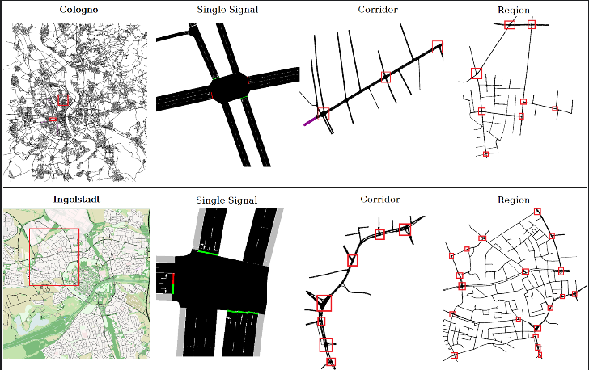

智能交通强化学习科研项目
科研项目 | 2025/07-2025/08

项目概述
智能交通强化学习科研项目聚焦“城市道路通行效率优化”，基于SUMO（Simulation of Urban MObility）交通仿真平台构建虚拟路网，通过强化学习算法训练智能体，实现对交通流量的动态调控。项目核心目标是解决特定路段（如学校周边、商圈路口）的拥堵问题，探索AI在智能交通领域的落地应用，我作为核心成员负责SUMO环境配置、智能体交互逻辑实现及PPO算法模型构建。
项目周期1个月，通过搭建“仿真环境-智能体-算法模型”的完整闭环，完成特定道路逆行屏蔽、动态车道调控等功能，最终实现测试路段通行效率提升15%的初步成果，为后续科研论文撰写提供实验数据支撑。
我的职责
-
本地SUMO虚拟环境配置：通过远程连接服务器的python解释器，使得解释器可以在本地部署运行
-
智能体与环境交互开发：使用网络掩码解决一直路口车辆交通等情况。
-
实现PPO强化学习算法：尝试利用PPO模型算法来训练智能体，并设计奖励机制以控制智能体行为。
项目截图
PPO算法实践（训练过程中奖励值变化趋势）
项目信息
项目类型
智能交通与强化学习（科研项目）
开发周期
1个月（2025/07-2025/08）
团队规模
4人（2算法+1仿真+1数据）
技术栈
Python
SUMO（交通仿真）
PyTorch（深度学习）
PPO算法（强化学习）
成果与收获
- 了解transformer框架中使用掩码来传递数据
- 理解强化学习核心逻辑（如PPO算法）能基于PyTorch实现算法并设计奖励机制
- 掌握机器学习的基本原理，了解到一部分神经网络的基本知识。
- 体验到研究生组的开会方式与研究节奏
获取与联系
联系电话：18568525203
邮箱：1062237244@qq.com